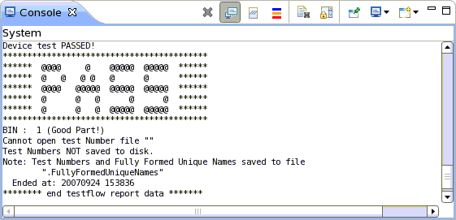

Console view: System console
The system console is part of the Setup perspective and displays errors that are associated with a particular test system resource (test data component). Errors coming from the test system and from Eclipse plug-ins are displayed in the Error Log View.

The system console is displayed at start up of SmarTest. If the system console is
not displayed, click the  icon and select System.
icon and select System.
The following color coding is used: Errors are colored red, warnings blue, the rest is black. If color coding is switched off (see the table below), all text is black.
The toolbar of the console contains the following icons:
Icon |
Function |
|---|---|

|
Closes the currently opened console. |

|
Forces the console to remain in background even if new messages occur. |

|
Inserts a separator line in the console text. |

|
Compares the tester status of the last two saved tester status logs and generates a change log. |

|
Prints the current settings of all instruments to console. |

|
Switches text coloring on or off. Switching text coloring off can increase the console output speed when very large amounts of text are output. |

|
Clears the content of the currently opened console. |

|
Locks scrolling. When new messages occur, the console does not scroll down to the new messages. |

|
Forces the console to remain on top of other views. |
|
|
If multiple consoles are opened, you can select which one is displayed. |

|
Opens a new console. |
Functional changes
- Introduced before SmarTest 6.3.2
- SmarTest 7.1.3: (Release 7.1.3.2) Added text coloring switch
- SmarTest 7.5.3: A new button "Diff Tester Status" to compare hardware status change.